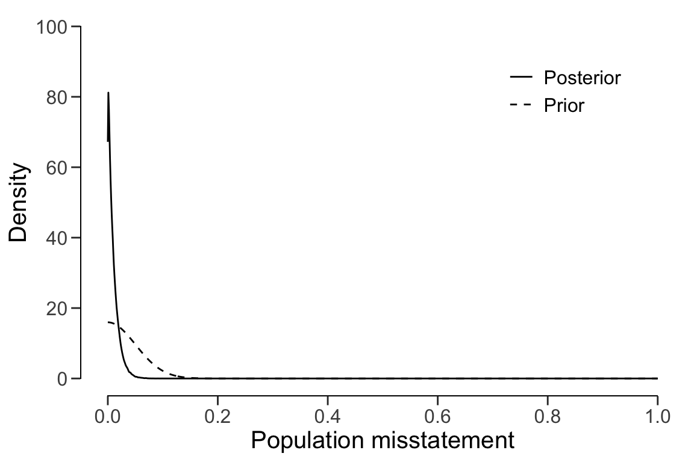
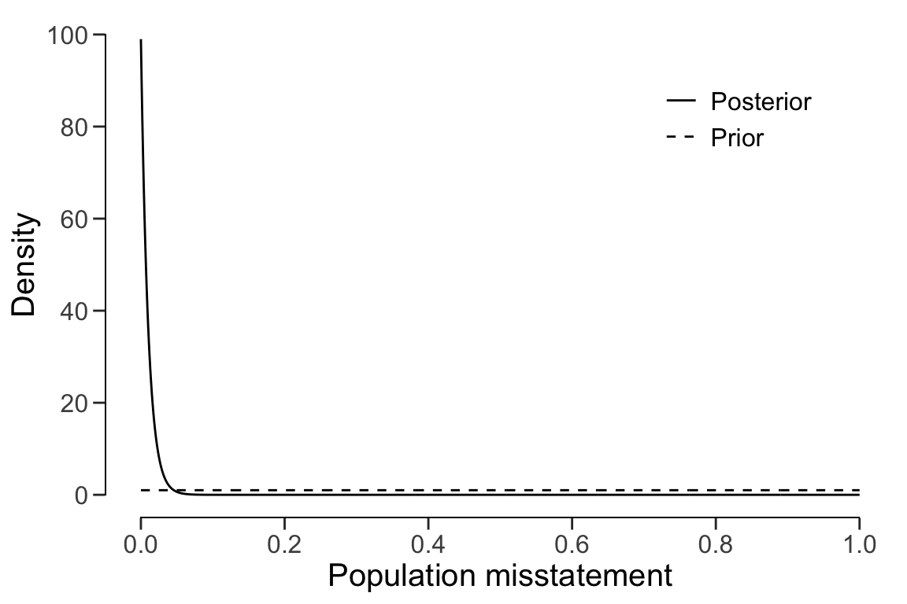

Chapter 7 Stratified Evaluation of Audit Samples
In a stratified sampling procedure, the auditor takes samples from different strata (or subgroups) in a population. An example of such a situation would be a group audit where the audited organization consists of different components or branches. Stratification is relevant for the group auditor if they must form an opinion on the group as a whole because they must aggregate the samples taken by the component auditors.
As a data example, consider the retailer data set that comes with the package.
The organization in question consists of 20 branches across the country. In each
of the 20 strata, a component auditor has taken a statistical sample and
reported the outcomes to the group auditor.
data(retailer)
options(mc.chains = 1)
#print(retailer)In general, there are three approaches to evaluating a stratified sample: no
pooling, complete pooling, and partial pooling (see Derks et al., 2022). When
using evaluation(), you must to indicate which type of pooling to use via the
pooling argument. No pooling assumes no similarities between strata, which
means that all strata are analyzed independently. Complete pooling assumes no
difference between strata, which means that all data is aggregated and analyzed
as a whole. Finally, partial pooling assumes differences and similarities
between strata, which means that information can be shared between strata.
Partial pooling (i.e., multilevel/hierarchical modeling) is a powerful
technique that can result in more efficient population and stratum estimates but
is currently only feasible when performing a Bayesian analysis. For this reason,
this vignette only describes the Bayesian approach to stratified evaluation but
going from this approach to a classical approach only requires setting
prior = FALSE.
The number of units per stratum in the population can be provided with N.units
to weigh the stratum estimates to determine population estimate. This is called
poststratification. If N.units is not specified, each stratum is assumed to be
equally represented in the population.
7.0.0.1 Approach 1: No pooling
No pooling (pooling = "none", default) assumes no similarities between strata.
This means that the prior distribution specified through prior is applied
independently for each stratum. This allows for independent estimates for the
misstatement in each stratum but also results in a relatively high uncertainty
in the population estimate. The call below evaluates the sample using a Bayesian
stratified evaluation procedure, in which the stratum estimates are
poststratified to arrive at the population estimate.
set.seed(1) # Important because the posterior distribution is determined via sampling
result_np <- evaluation(
materiality = 0.05, method = "binomial", prior = TRUE,
n = retailer$samples, x = retailer$errors, N.units = retailer$items,
alternative = "two.sided", pooling = "none"
)
summary(result_np)
#
# Bayesian Audit Sample Evaluation Summary
#
# Options:
# Confidence level: 0.95
# Population size: 144000
# Materiality: 0.05
# Hypotheses: H₀: Θ = 0.05 vs. H₁: Θ ≠ 0.05
# Method: binomial
# Prior distribution: Determined via MCMC sampling
#
# Data:
# Sample size: 2575
# Number of errors: 115
# Sum of taints: 115
#
# Results:
# Posterior distribution: Determined via MCMC sampling
# Most likely error: 0.058487
# 95 percent credible interval: [0.042763, 0.082201]
# Precision: 0.023714
# BF₁₀: 0
#
# Strata (20):
# N n x t mle lb ub precision
# 1 5000 300 21 21 0.07000 0.04637 0.10467 0.03467
# 2 5000 300 16 16 0.05333 0.03324 0.08489 0.03156
# 3 5000 300 15 15 0.05000 0.03069 0.08086 0.03086
# 4 5000 300 14 14 0.04667 0.02816 0.07681 0.03014
# 5 5000 300 16 16 0.05333 0.03324 0.08489 0.03156
# 6 5000 150 5 5 0.03333 0.01472 0.07558 0.04225
# 7 5000 150 4 4 0.02667 0.01084 0.06643 0.03977
# 8 5000 150 3 3 0.02000 0.00726 0.05696 0.03696
# 9 5000 150 4 4 0.02667 0.01084 0.06643 0.03977
# 10 5000 150 5 5 0.03333 0.01472 0.07558 0.04225
# 11 10000 50 2 2 0.04000 0.01230 0.13459 0.09459
# 12 10000 50 3 3 0.06000 0.02178 0.16242 0.10242
# 13 10000 50 2 2 0.04000 0.01230 0.13459 0.09459
# 14 10000 50 1 1 0.02000 0.00478 0.10447 0.08447
# 15 10000 50 0 0 0.00000 0.00050 0.06978 0.06978
# 16 10000 15 0 0 0.00000 0.00158 0.20591 0.20591
# 17 10000 15 0 0 0.00000 0.00158 0.20591 0.20591
# 18 10000 15 0 0 0.00000 0.00158 0.20591 0.20591
# 19 10000 15 1 1 0.06667 0.01551 0.30232 0.23565
# 20 4000 15 3 3 0.20000 0.07266 0.45646 0.25646In this case, the output of the summary() function shows that the estimate of
the misstatement in the population is 5.85%, with the 95% credible interval
ranging from 4.28% to 8.22%. The stratum estimates differ substantially from
each other but are relatively uncertain.
plot(result_np, type = "estimates")
The prior and posterior distribution for the population misstatement can be
requested via the plot() function.
plot(result_np, type = "posterior")
7.0.0.2 Approach 2: Complete pooling
Complete pooling (pooling = "complete") assumes no differences between strata.
This has the advantages that data from all strata can be aggregated, which
decreases the uncertainty in the population estimate compared to the no
pooling approach. However, the disadvantage of this approach is that it does
not facilitate the distinction between between strata, as every stratum
receives the same estimate equal to that of the population. The call below
evaluates the sample using a Bayesian stratified evaluation procedure, in
which the strata are assumed to be the same.
result_cp <- evaluation(
materiality = 0.05, method = "binomial", prior = TRUE,
n = retailer$samples, x = retailer$errors, N.units = retailer$items,
alternative = "two.sided", pooling = "complete"
)
summary(result_cp)
#
# Bayesian Audit Sample Evaluation Summary
#
# Options:
# Confidence level: 0.95
# Population size: 144000
# Materiality: 0.05
# Hypotheses: H₀: Θ = 0.05 vs. H₁: Θ ≠ 0.05
# Method: binomial
# Prior distribution: beta(α = 1, β = 1)
#
# Data:
# Sample size: 2575
# Number of errors: 115
# Sum of taints: 115
#
# Results:
# Posterior distribution: beta(α = 116, β = 2461)
# Most likely error: 0.04466
# 95 percent credible interval: [0.03735, 0.053345]
# Precision: 0.0086852
# BF₁₀: 0.022725
#
# Strata (20):
# N n x t mle lb ub precision bf10
# 1 5000 300 21 21 0.04466 0.03735 0.05335 0.00869 0.02273
# 2 5000 300 16 16 0.04466 0.03735 0.05335 0.00869 0.02273
# 3 5000 300 15 15 0.04466 0.03735 0.05335 0.00869 0.02273
# 4 5000 300 14 14 0.04466 0.03735 0.05335 0.00869 0.02273
# 5 5000 300 16 16 0.04466 0.03735 0.05335 0.00869 0.02273
# 6 5000 150 5 5 0.04466 0.03735 0.05335 0.00869 0.02273
# 7 5000 150 4 4 0.04466 0.03735 0.05335 0.00869 0.02273
# 8 5000 150 3 3 0.04466 0.03735 0.05335 0.00869 0.02273
# 9 5000 150 4 4 0.04466 0.03735 0.05335 0.00869 0.02273
# 10 5000 150 5 5 0.04466 0.03735 0.05335 0.00869 0.02273
# 11 10000 50 2 2 0.04466 0.03735 0.05335 0.00869 0.02273
# 12 10000 50 3 3 0.04466 0.03735 0.05335 0.00869 0.02273
# 13 10000 50 2 2 0.04466 0.03735 0.05335 0.00869 0.02273
# 14 10000 50 1 1 0.04466 0.03735 0.05335 0.00869 0.02273
# 15 10000 50 0 0 0.04466 0.03735 0.05335 0.00869 0.02273
# 16 10000 15 0 0 0.04466 0.03735 0.05335 0.00869 0.02273
# 17 10000 15 0 0 0.04466 0.03735 0.05335 0.00869 0.02273
# 18 10000 15 0 0 0.04466 0.03735 0.05335 0.00869 0.02273
# 19 10000 15 1 1 0.04466 0.03735 0.05335 0.00869 0.02273
# 20 4000 15 3 3 0.04466 0.03735 0.05335 0.00869 0.02273For example, the output of the summary() function shows that the estimate of
the misstatement in the population is 4.47%, with the 95% credible interval
ranging from 3.74% to 5.33%. Since the data is aggregated, the stratum estimates
contain relatively little uncertainty. However, the probability of misstatement
in stratum 20 (many misstatements) under this assumption is the same as that of
stratum 15 (few misstatements).
plot(result_cp, type = "estimates")
The prior and posterior distribution for the population misstatement can be
requested via the plot() function.
plot(result_cp, type = "posterior")
7.0.0.3 Approach 3: Partial pooling
Finally, partial pooling (pooling = "partial") assumes differences and
similarities between strata. This allows the auditor to differentiate between
strata, while also sharing information between the strata to reduce uncertainty
in the population estimate. The call below evaluates the sample using a Bayesian
stratified evaluation procedure, in which the stratum estimates are
poststratified to arrive at the population estimate.
set.seed(1) # Important because the posterior distribution is determined via sampling
result_pp <- evaluation(
materiality = 0.05, method = "binomial", prior = TRUE,
n = retailer$samples, x = retailer$errors, N.units = retailer$items,
alternative = "two.sided", pooling = "partial"
)
summary(result_pp)
#
# Bayesian Audit Sample Evaluation Summary
#
# Options:
# Confidence level: 0.95
# Population size: 144000
# Materiality: 0.05
# Hypotheses: H₀: Θ = 0.05 vs. H₁: Θ ≠ 0.05
# Method: binomial
# Prior distribution: Determined via MCMC sampling
#
# Data:
# Sample size: 2575
# Number of errors: 115
# Sum of taints: 115
#
# Results:
# Posterior distribution: Determined via MCMC sampling
# Most likely error: 0.042543
# 95 percent credible interval: [0.034322, 0.052321]
# Precision: 0.0097784
# BF₁₀: 0.020103
#
# Strata (20):
# N n x t mle lb ub precision
# 1 5000 300 21 21 0.04783 0.03805 0.08010 0.03227
# 2 5000 300 16 16 0.04482 0.03323 0.06803 0.02321
# 3 5000 300 15 15 0.04397 0.03274 0.06348 0.01951
# 4 5000 300 14 14 0.04548 0.03022 0.06281 0.01734
# 5 5000 300 16 16 0.04483 0.03276 0.06765 0.02283
# 6 5000 150 5 5 0.04143 0.02384 0.05733 0.01589
# 7 5000 150 4 4 0.04095 0.02161 0.05726 0.01631
# 8 5000 150 3 3 0.04139 0.01914 0.05298 0.01159
# 9 5000 150 4 4 0.03985 0.02079 0.05747 0.01762
# 10 5000 150 5 5 0.04001 0.02382 0.05802 0.01800
# 11 10000 50 2 2 0.04310 0.02364 0.06796 0.02486
# 12 10000 50 3 3 0.04217 0.02696 0.07318 0.03102
# 13 10000 50 2 2 0.04450 0.02269 0.06836 0.02386
# 14 10000 50 1 1 0.04193 0.02013 0.06304 0.02111
# 15 10000 50 0 0 0.04151 0.01686 0.05886 0.01735
# 16 10000 15 0 0 0.04443 0.01778 0.06487 0.02044
# 17 10000 15 0 0 0.04232 0.01971 0.06737 0.02504
# 18 10000 15 0 0 0.04114 0.02021 0.06345 0.02231
# 19 10000 15 1 1 0.04348 0.02421 0.08143 0.03795
# 20 4000 15 3 3 0.04448 0.02955 0.10533 0.06085In this case, the output shows that the estimate of the misstatement in the population is 4.34%, with the 95% credible interval ranging from 3.45% to 5.33%. Note that this population estimate is substantially less uncertain than that of the no pooling approach. Note that, like in the no pooling approach, the stratum estimates are different from each other but lie closer together and are less uncertain.
plot(result_pp, type = "estimates")
The prior and posterior distribution for the population misstatement can be
requested via the plot() function.
plot(result_pp, type = "posterior")